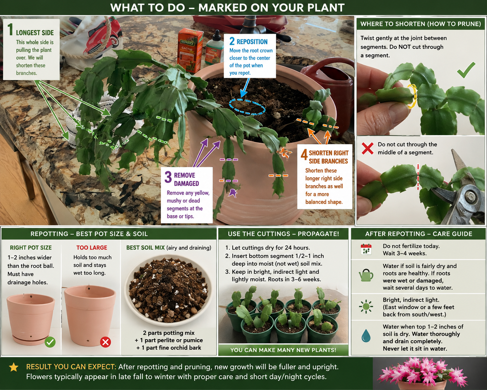
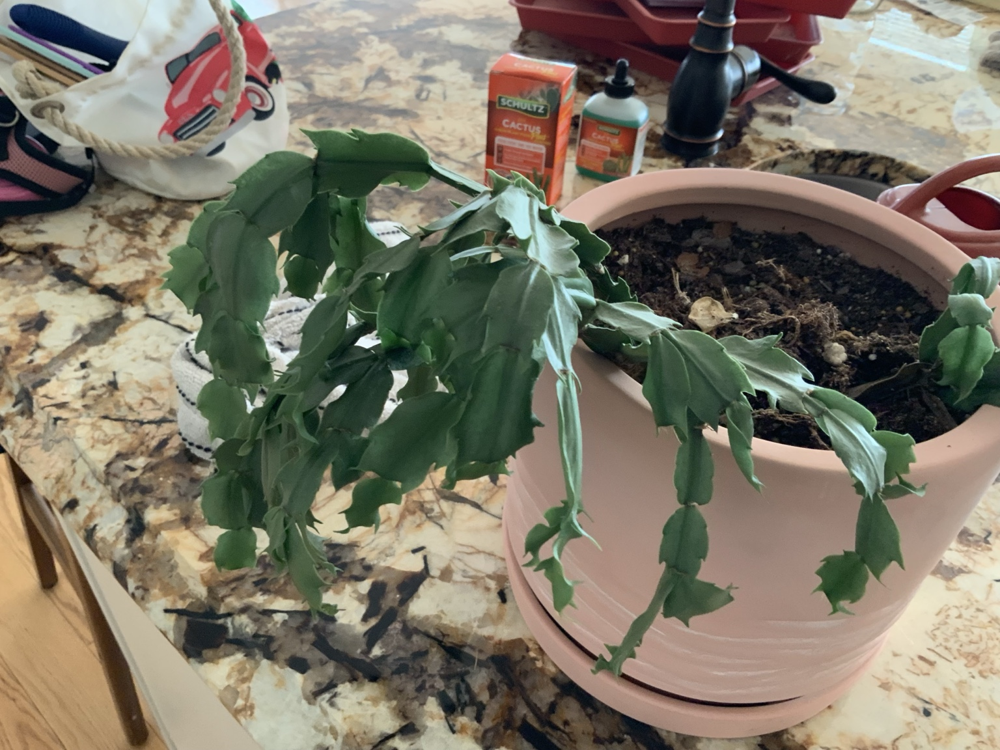
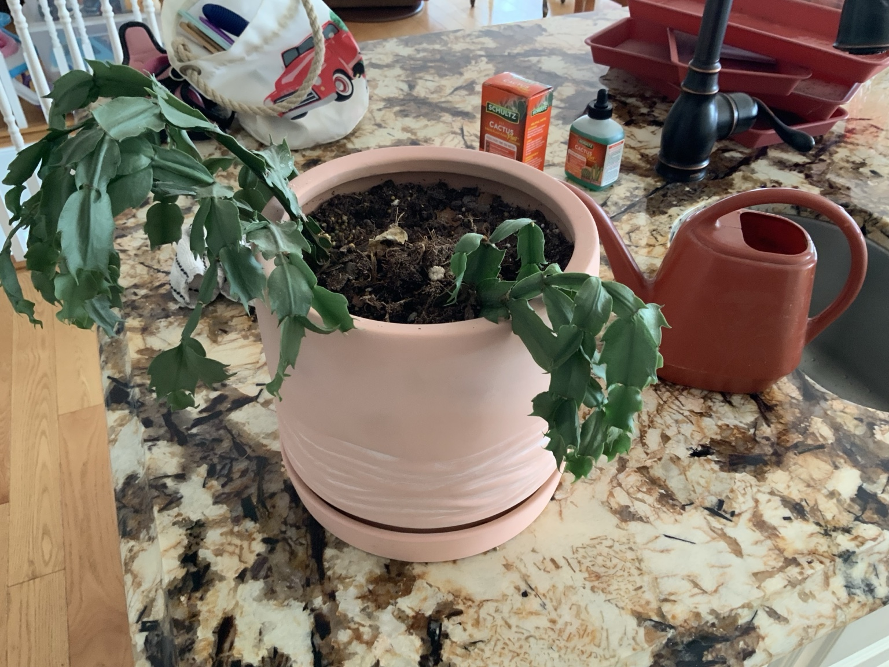
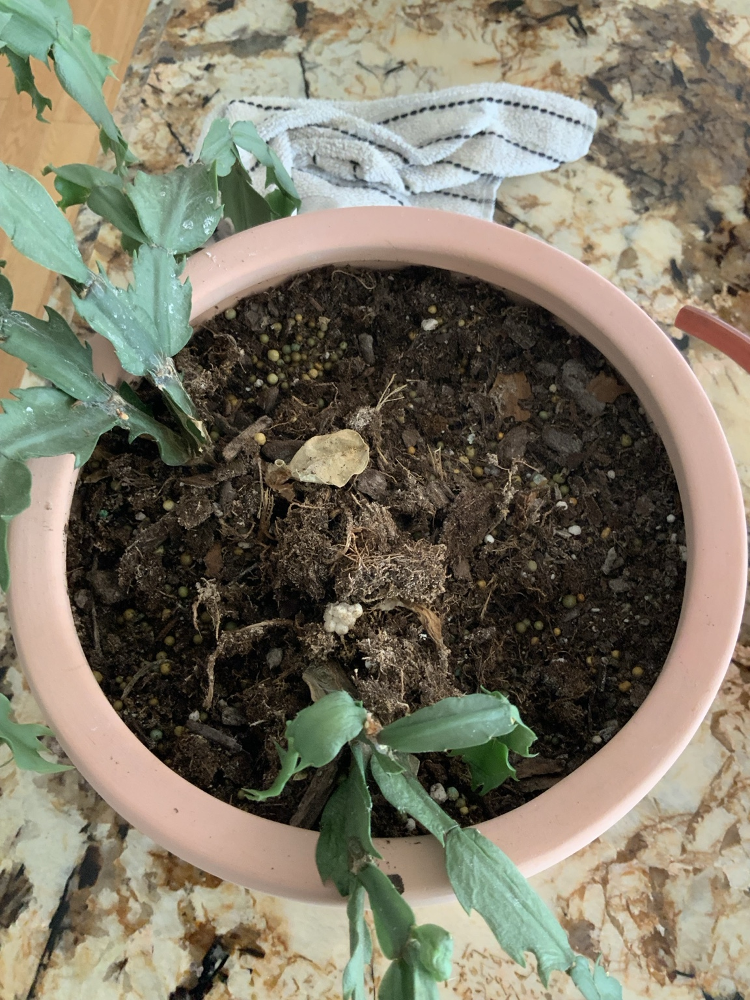

August 10, 2026 — Repotting & Pruning Plan
This plant is healthy enough to recover well, but it is leaning heavily and is growing in a pot that is large for its root system. The plan is to move it to a smaller, well-drained pot, refresh the mix, recenter the plant, and shorten selected long branches.

Photos Before Repotting



Repotting
Use a pot only 1–2 inches wider than the root ball and make sure it has drainage holes. A good mix is 2 parts indoor potting mix, 1 part perlite or pumice, and 1 part fine orchid bark. Inspect the roots and remove only black, mushy, or dead roots. Recenter the root crown without burying the green segments deeply.
Pruning & Propagation
Shorten the longest hanging branches by about 2–4 segments, especially on the heavy left side, and lightly balance the right side. Twist gently at the joint between segments rather than cutting through a segment. Save healthy pieces, let them dry about 24 hours, then insert the bottom segment shallowly into slightly moist, airy potting mix.
Water & Feeding
If the roots are healthy and the old mix is fairly dry, water modestly after repotting and allow complete drainage. If roots are wet or damaged, wait several days before watering. Going forward, water when the top 1–2 inches of mix have dried. Do not fertilize immediately after repotting; wait about 3–4 weeks before using a diluted cactus/houseplant fertilizer.
Light & Bloom Care
Keep in bright indirect light. An east window is excellent, or place it back from a bright south or west window. Rotate periodically for balanced growth. Cooler nights and naturally longer fall nights help encourage buds.